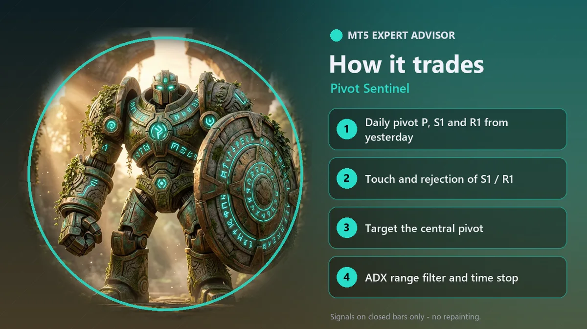
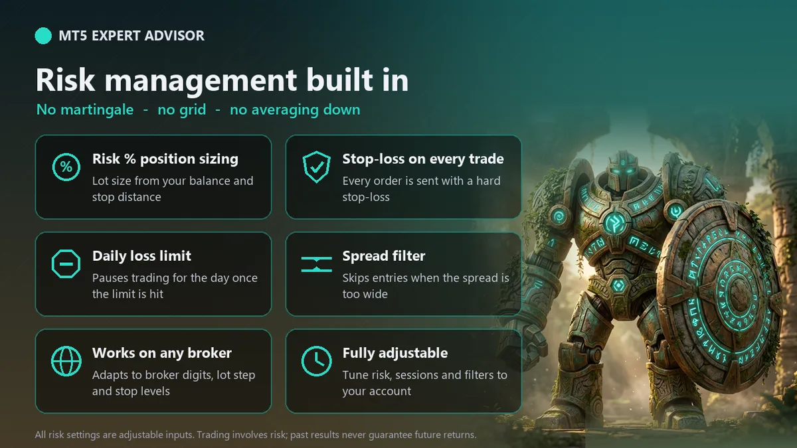

Pivot Sentinel is a fully automated Expert Advisor for MetaTrader 5 - daily pivot S1 / R1 bounce trading. Classic floor-trader pivots, traded automatically. It is designed for XAUUSD (gold) and also runs on forex majors such as EURUSD and GBPUSD.
How it trades
- Pivots - the central pivot P, support S1 and resistance R1 are calculated each day from the previous day's high, low and close.
- Touch and reject - for a buy, the last closed bar must reach S1 (within a small ATR tolerance) and close back above it as a bullish bar or with a long lower wick; the mirror at R1 for sells.
- Range filter - no new trades when ADX is above the maximum (pivots hold best in ranging sessions).
- Stop-loss beyond the bar extreme / level plus an ATR buffer. Target = the central pivot P (or an R-multiple). Setups with too little room are skipped.
- Time stop closes trades that have not reached the target after N bars.
Risk management (built in)
- Every trade is opened with a stop-loss. There is no martingale, no grid and no averaging down.
- Position size from risk % of equity (default 1%) or a fixed lot; lots are normalised to the broker's min / max / step and reduced if free margin is not enough.
- Daily loss limit: no new trades for the rest of the day once equity is down the set % from the day-start equity.
- Max spread filter, optional trading-hours filter, and no orders while the market is closed or trading on the symbol is disabled.
- Stop-loss / take-profit are always placed outside the broker's stops and freeze levels.
- Works on hedging and netting accounts (on netting accounts it opens only when the symbol has no other position).
- One position at a time per magic number; signals are evaluated once per closed bar (no repainting).
Inputs and default settings
| Input | Default |
|---|---|
| Signal timeframe (intraday) | H1 |
| Touch tolerance around S1 / R1 (x ATR) | 0.2 |
| Rejection wick, % of the bar range (or a bar closing in trade direction) | 35.0 |
| ADX period | 14 |
| Skip new trades when ADX is above this (0 = off) | 30.0 |
| ATR period | 14 |
| Stop buffer beyond the bar / level (x ATR) | 0.5 |
| Target the central pivot (false = R multiple) | true |
| Take-profit R multiple when not targeting the pivot | 2.0 |
| Skip if reward / risk is below this | 1.0 |
| Close a trade after N bars (0 = off) | 24 |
| Risk per trade (% of equity), used when Fixed lot = 0 | 1.0 |
| Fixed lot (0 = size from risk %) | 0.0 |
| Maximum lot per trade (0 = broker maximum) | 10.0 |
| Daily loss limit (% of day-start equity, 0 = off) | 3.0 |
| Max spread (points, 2-digit gold scale: 100 = 1.00 USD; 0 = off) | 50 |
| Max slippage (points, same scale) | 30 |
| Trade only inside the hours below | false |
| Trading start hour (server time, 0-23) | 1 |
| Trading end hour (server time, 0-23) | 22 |
| Show status panel on the chart | true |
| Magic number (change it to run several instances on one symbol) | 26102206 |
Recommended setup
- Symbol / timeframe: XAUUSD on the default timeframe shown above; also forex majors. Test other timeframes in the Strategy Tester first.
- Account: hedging or netting, any deposit that allows the broker's minimum lot with a sensible risk %.
- VPS: recommended for uninterrupted operation.
Honest notes
- No trading system can guarantee profit. Past performance, in the tester or live, does not guarantee future results.
- Always test the EA in the MetaTrader 5 Strategy Tester and then on a demo account before using real money, with your broker's own data and spread.
- Hours are in your broker's server time.
- Start with a low risk % and use money you can afford to lose.


Plan your risk before you run it
- Check the lot the EA will use for your balance and stop with the XAUUSD lot size calculator and the margin calculator.
- Compare targets and stops with the risk reward calculator.
- Risk Per Trade: the 1% Rule with Gold Examples
- How to Set a Stop Loss on Gold (ATR Method)
FAQ
Which pivot formula does it use?
Classic floor pivots from the previous day: P = (high + low + close) / 3, R1 = 2P - low, S1 = 2P - high, using your broker's daily candle.
Is there a free demo?
Yes. Every MQL5 Market product has a free demo that runs in the MetaTrader 5 Strategy Tester, so you can test it on your broker's own data before buying.
Does it use martingale, grid or averaging down?
No. Every position is opened with a stop-loss, the lot size comes from your risk % (or a fixed lot), and there is a daily loss limit.
Which broker and account do I need?
Any MetaTrader 5 broker that offers XAUUSD, on a hedging or netting account. A low-spread account and a VPS for 24/5 operation are recommended.
Can this EA guarantee profits?
No. No trading system wins every trade, and backtest or past results do not guarantee future results. Start on a demo account with the default risk.
Trading gold, forex and CFDs is high risk and you can lose your capital. This page is for information only and is not investment advice. Illustrations are not trading results.